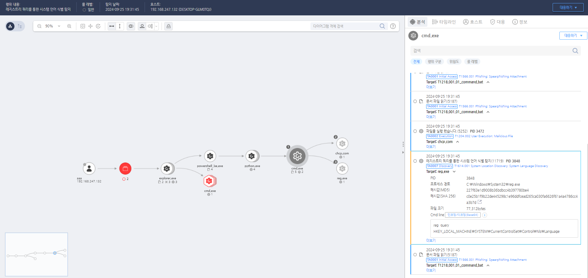

MITRE ATT&CK 액션을 기준으로 대응 방안을 작성
레지스트리 "HKEYLOCALMACHINE\SYSTEM\CurrentControlSet\Control\Nls\Language"를 조회하는 행위를 탐지한다.
 https://172.18.10.125:8903/#/event/edr/66f3e5e8002dc795000000cc
의심스러운 프로세스 및 활동 분석 이벤트 및 로그 분석: 공격자가 시스템의 위치 및 언어 설정을 확인하는 활동은 보통 로컬 설정을 가져오는 API 호출이나 시스템 레지스트리 조회로 이루어집니다. 이벤트 로그 및 프로세스 모니터링 로그에서 이러한 호출이나 접근 시도를 분석하고, 비정상적인 활동이 탐지되었을 때 즉각적인 조치를 취합니다. 프로세스 모니터링: GetLocaleInfo, GetSystemDefaultUILanguage 등의 API 호출이 의심스러운 프로세스에서 이루어지는지 모니터링합니다. 특히, 정상적인 응용 프로그램에서 자주 사용되지 않는 경우 해당 프로세스와 관련된 활동을 조사합니다. 이벤트 상관관계 분석: 악성코드가 초기 실행 중 위치나 언어 설정을 확인한 후, 추가적인 악성 행동을 수행할 수 있으므로, 이와 관련된 이벤트들을 상관관계 분석하여 공격의 징후를 식별합니다. 예를 들어, 위치 정보 수집 후 추가적인 네트워크 통신이나 의심스러운 파일 다운로드가 이루어지는지 확인합니다.
의심스러운 파일 및 프로세스 격리 파일 및 프로세스 격리: 위치 및 언어 정보를 조회한 프로세스가 의심스러운 경우, 해당 프로세스를 즉시 종료하고 격리합니다. 해당 프로세스가 실행한 파일 및 레지스트리 변경 사항을 분석하여 악성 활동 여부를 확인합니다. 시스템 격리 및 분석: 공격자가 시스템 정보를 확인한 이후 추가적인 악성 활동이 예상되는 경우, 해당 시스템을 네트워크에서 격리하고 심층 분석을 수행합니다. 이 과정에서 악성코드가 추가로 설치되었거나, C2 서버와 통신한 흔적이 있는지 확인합니다.
실시간 경고 및 탐지 규칙 강화 의심스러운 API 호출 탐지: GetSystemDefaultUILanguage, GetLocaleInfo, NetUserEnum 등의 API 호출을 탐지하여 의심스러운 프로세스의 경고를 설정합니다. 이러한 API가 비정상적으로 사용될 경우 보안 경고를 생성하고 추가적인 조사를 수행합니다. 네트워크 트래픽 모니터링: 시스템 위치 및 언어 정보를 수집한 후, 공격자가 외부 C2 서버로 데이터를 전송할 수 있으므로, 네트워크 트래픽을 모니터링하여 비정상적인 데이터 유출을 탐지하고 차단합니다.
내부 침투 테스트 및 대응 훈련 모의 침투 테스트 수행: 조직 내부에서 유사한 공격 시나리오를 모의로 수행하여, 시스템 위치 및 언어 식별 시도와 그 이후의 대응 절차를 점검합니다. 이 과정에서 보안팀의 대응 능력을 강화하고, 개선 사항을 도출합니다. 대응 절차 훈련: 보안팀이 공격자가 시스템 정보를 조회한 이후의 추가적인 악성 행위를 신속하게 탐지하고 대응할 수 있도록, 내부 대응 절차에 대한 정기적인 훈련을 실시합니다.
대응 조치 보고 및 법적 대응 사고 보고 및 공유: 시스템 위치 및 언어 정보를 식별한 공격 활동이 발견될 경우, 보안팀 및 관련 부서에 즉시 보고하고, 추가적인 피해를 방지하기 위한 조치를 논의합니다. 필요 시 법 집행 기관에 해당 공격 활동을 보고하고, 법적 대응을 준비합니다. 보안 인식 교육 강화: 내부 사용자들에게 시스템 정보 수집 활동의 위험성과, 악성코드가 이러한 정보를 수집하는 방법에 대해 교육합니다. 이를 통해, 직원들이 비정상적인 시스템 동작을 인지하고 보고할 수 있도록 인식을 강화합니다.
시스템 정보 접근 제한
안전한 네트워크 환경 구성
Endpoint Protection 강화
사용자 보안 교육
정기적인 시스템 검토 및 보안 점검
Action 실행시 함꼐 영향을 받는 다른 Techniqes
| ATT&CK |
|---|
| T1614.001 |
| D3FEND |
|---|
| D3-SCA System Call Analysis |
| D3-PM Platform Monitoring |
| D3-FA File Analysis |